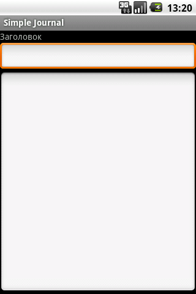
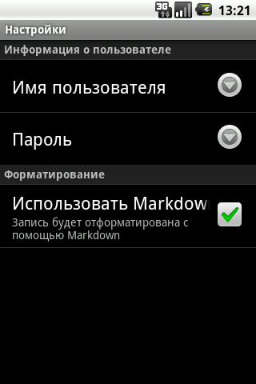

Download
You can download this project in either zip, tar or a pre-built apk formats.
You can also clone the project with Git by running:
$ git clone git://github.com/piratus/simplejournal
Screenshots
 
Author
- Andrew Popovych (piratus@gmail.com)
Contibutors
- Sergey Astanin (s.astanin@gmail.com)